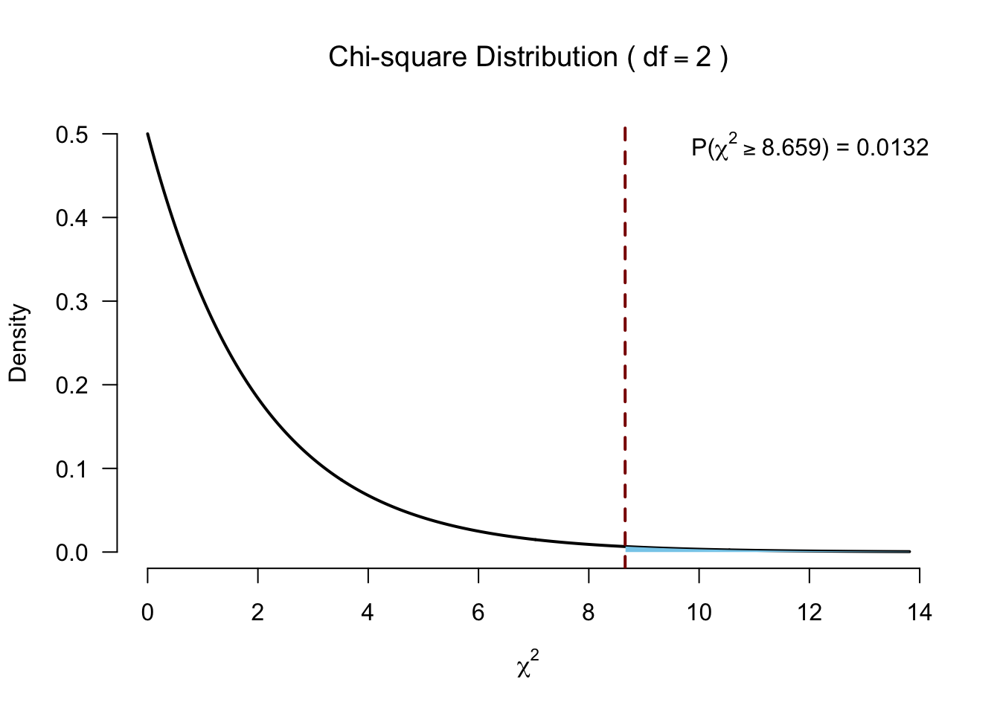

set.seed(2348586)
n <- 30
factor <- rep(c("ecstasy","alcohol","control"), each=n/3)
dummy.1 <- ifelse(factor == "alcohol", 1, 0)
dummy.2 <- ifelse(factor == "ecstasy", 1, 0)
b.0 <- 23
b.1 <- 0
b.2 <- 0
error <- rnorm(n, 0, 1.7)
# Model
depres <- b.0 + b.1*dummy.1 + b.2*dummy.2 + error
depres <- round(depres)
data <- data.frame(factor, depres)Kruskal–Wallis test
Independent >2 samples
Kruskal–Wallis test

Created by William Henry Kruskal (L) and Wilson Allen Wallis (R), the Kruskal-Wallis test is a nonparametric alternative to the independent one-way ANOVA.
The Kruskal-Wallis test essentially subtracts the expected mean ranking from the calculated oberved mean ranking, which is \(\chi^2\) distributed.
Simulate data
Assign ranks
# Assign ranks
data$ranks <- rank(data$depres)The data
Calculate H
\[H = \frac{12}{N(N+1)} \sum_{i=1}^k \frac{R_i^2}{n_i} - 3(N+1)\]
- \(N\) total sample size
- \(n_i\) sample size per group
- \(k\) number of groups
- \(R_i\) rank sums per group
Calculate H
# Now we need the sum of the ranks per group.
R.i <- aggregate(ranks ~ factor, data = data, sum)$ranks
R.i[1] 207.0 121.5 136.5# De total sample size N is:
N <- nrow(data)
# And the sample size per group is n_i:
n.i <- aggregate(depres ~ factor, data=data, length)$depres
n.i[1] 10 10 10Calculate H
\[H = \frac{12}{N(N+1)} \sum_{i=1}^k \frac{R_i^2}{n_i} - 3(N+1)\]
H <- ( 12/(N*(N+1)) ) * sum(R.i^2/n.i) - 3*(N+1)
H[1] 5.37871And the degrees of freedom
k <- 3
df <- k - 1Test for significance
visualize.chisq(H, df, section="upper")